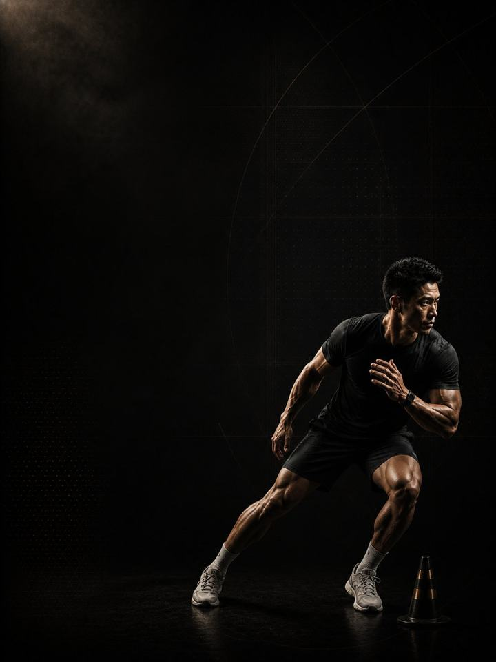

الحركة متعددة الاتجاهات · الاستشفاء
أصلِح ما كلّفك إياه الموسم، ثم أعِد بناء الأساس للسنة القادمة.
- مناسب لـلاعبي كرة القدم وكرة السلة وكرة اليد بعد انتهاء الموسم
- أيام التدريب3 أيام في النادي أسبوعيًا خارج الموسم، أو نسخة مختصرة من يومين
- مدة الجلسة48–60 دقيقة
- المعداتنادٍ متكامل، مع كرة طبية وزلّاجة وأقماع إن توفّرت
- الصيغةملف PDF للهاتف، وكل تمرين مرتبط بفيديو توضيحي
لمن هذا البرنامج
للاعبي كرة القدم وكرة السلة وكرة اليد الذين انتهى موسمهم للتو. فترة خارج الموسم ليست إجازة، وليست فترة إعداد جديدة أيضًا. إنها النافذة الوحيدة لإصلاح ما تراكم حين لم يكن هناك وقت للتوقّف: الإزعاج الذي لعبت رغمه، والجهة التي لم تطابق الأخرى قط، والسمانة المشدودة منذ شهور.
تبدأ هذه الكتلة سهلة عن قصد، بأربعة أسابيع بلا عَدْو ولا تغيير اتجاه ولا قفز، بينما تحصل الأنسجة التي تحمّلت الحمل تسعة أشهر على فرصة لإعادة بناء نفسها. ثم تعيد البناء: الحجم أولًا، والوزن ثانيًا، والسرعة أخيرًا. وحين تعود الكتلة 1 من جديد، تبدأها سليمًا ومتقدّمًا بدلًا من أن تقضيها في الإصلاح.
موقعها من السنة: الكتلة 4 من 4 في عائلة الحركة متعددة الاتجاهات: الأساس، ثم البناء، ثم المنافسة، ثم الاستشفاء، ثم العودة إلى الأساس. طبّقها فور انتهاء موسمك، فهي تقود مباشرة إلى الكتلة 1 في السنة القادمة.
أسبوعك
خذ الأسبوع الأول راحة كاملة. قبل الأسبوع 1، خذ خمسة إلى سبعة أيام بلا أي تدريب منظّم. امشِ، واسبح، ونَم. هذه وصفة، لا مجرد إذن.
| الأحد | الاثنين | الثلاثاء | الأربعاء | الخميس | الجمعة | السبت | |
|---|---|---|---|---|---|---|---|
| خارج الموسم، 3 أيام | اليوم 1 | راحة | اليوم 2 | راحة | اليوم 3 | راحة | راحة |
| النسخة المختصرة، يومان | اليوم 1 | راحة | راحة | اليوم 2 | راحة | راحة | راحة |
ثلاثة أيام غير متتالية هي النسخة الأساسية. الجلسات أطول مما هي داخل الموسم، لكنها أقل شدّة بكثير.
كل جلسة تسير بالطريقة نفسها:
- الإحماء، 8–10 دقائق. التسلسل نفسه في كل جلسة. تفعيل الأرداف والوركين والكتفين.
- السرعة والقدرة الانفجارية، 12–15 دقيقة. الأسابيع 1–4: عمل الزلّاجة فقط، بلا عَدْو أو قفز. الأسابيع 5–8: عمل جانبي، مع عودة قفزات خفيفة في الإحماء. الأسابيع 9–12: يعود العَدْو والقفزات والرميات.
- القوة، 20–25 دقيقة. الرفعات المركّبة، مع دقيقتين إلى ثلاث دقائق بين المجموعات.
- تمارين الأنسجة، 8–10 دقائق. كوبنهاغن والسمانة والحمل، مع النوردي ابتداءً من الأسبوع 5. في النهاية، ولا تُحذف أبدًا.
كيف تتقدّم الأسابيع الـ12
تتكيّف الأنسجة على ساعة أبطأ من ساعة اللياقة. فالأوتار والنسيج الضام التي تحمّلت أحمالًا عالية طوال تسعة أشهر تحتاج إلى فترة من الشدّة المنخفضة، لا النشاط المنخفض، كي تعيد بناء نفسها. وهذه الفترة غير موجودة داخل الموسم. هذه الكتلة تستغلها عن قصد: خفّف الحمل أولًا، وأعِد بناء القدرة العامة ثانيًا، ولا تُعِد العَدْو وتغيير الاتجاه إلا حين يكون تحتهما ما يحملهما.
| الأسابيع 1–4 | الأسابيع 5–8 | الأسابيع 9–12 | |
|---|---|---|---|
| المرحلة | إصلاح الأنسجة | التضخّم العضلي | تحمّل الصدمات |
| الهدف | منح المفاصل والأوتار وقتًا للتعافي من حمل الموسم | إعادة بناء الكتلة العضلية التي فُقدت خلال الموسم | استعادة تحمّل الصدمات والعَدْو |
| كيف تبدو | أجهزة، ونطاقات حركة متحكَّم بها، ولا صدمات | تعود الأوزان الحرة ويرتفع الحجم، مع عودة قفزات خفيفة في الإحماء. إنها مرحلة بناء العضلات في سنتك. | تعود الصدمات والسرعة كما يجب |
| المجموعات الفعلية أسبوعيًا | 48 | 58 | 64 |
| متوسط الجهد | جهد 6.1/10، يتبقى نحو 4 تكرارات | جهد 7.1/10، يتبقى نحو 3 | جهد 7.7/10، يتبقى نحو 2.3 |
| مرات الهبوط أسبوعيًا | 0 | 60 | 100 |
| الرميات أسبوعيًا | 0 | 0 | 20 |
المرحلة في لمحة
المجموعات التدريبية أسبوعيًا حسب ما تدرّبه. الخط المتقطع هو مستوى الجهد.
موقع هذه المرحلة في السنة التدريبية
نفّذ المراحل الأربع بالترتيب لتكتمل سنة تدريبية كاملة.
الجهد (RPE) تقييم من 1 إلى 10 لمدى صعوبة المجموعة: «جهد 7/10» يعني أنه يتبقى في الخزان نحو 3 تكرارات. والمجموعات الفعلية لا تشمل الإحماء.
أسابيع التخفيف: الأسبوعان 6 و12 أخف. والأسبوع 12 يهيّئك أيضًا لبدء الكتلة 1 وأنت مرتاح لا متعب.
القواعد التي تجعله ينجح
- خذ أسبوع الراحة أولًا. خمسة إلى سبعة أيام بلا أي تدريب منظّم قبل الأسبوع 1. هو أرخص أجزاء هذه الكتلة وأكثرها فاعلية، وأكثرها تعرّضًا للتخطّي.
- الأسابيع 1–4 يُفترض أن تبدو أسهل من اللازم. لا عَدْو، ولا تغيير اتجاه، ولا قفز. الأوتار تعيد بناء نفسها على ساعة أبطأ من العضلات، وهذه هي النافذة الوحيدة المتاحة لها.
- الحجم قبل الوزن، والوزن قبل السرعة. عكس هذا الترتيب هو الطريقة التي تُنتج بها فترات خارج الموسم الإصابات.
- أصلِح شيئًا واحدًا كما يجب. اختر المنطقة التي أزعجتك طوال الموسم، وطبّق برنامج AXIS التصحيحي المناسب لها إلى جانب الأسابيع 1–8. هذه الكتلة تترك مساحة لذلك بالضبط، ولن تتاح لك هذه الفرصة مرة أخرى قبل عام.
- أنهِ الكتلة مرتاحًا، لا منهكًا. يجب أن يتركك الأسبوع 12 جاهزًا لبدء الكتلة 1 بقوة. فترة خارج الموسم التي تنتهي بالإنهاك قد أفشلت غرضها بنفسها.
- رقم القفزة أرخص اختبار للتعب. ابتداءً من الأسبوع 5، ثلاث وثبات طويلة من الثبات في بداية كل يوم 1، واحتفظ بأفضلها. إذا كانت أقل بأكثر من 10% من متوسطك المتحرّك، فخفّف ذلك اليوم: احذف تمارين القدرة الانفجارية ومجموعة واحدة من كل رفعة.
- احسب مرات الهبوط. لا هبوط في الأسابيع 1–4، ويستخدم الإحماء رفع السمانة بدلًا من القفزات. وابتداءً من الأسبوع 5، أبقِ الأسبوع تحت نحو 100 هبوط، بما في ذلك قفزات الإحماء. والتدريب الرياضي يُحسب فوق ذلك.
المصطلحات
- الكتلة التدريبية: 12 أسبوعًا. هذا البرنامج. تطوّر الكتلة الواحدة مجموعة واحدة من الصفات إلى مستوى محدّد.
- المرحلة (الدورة المتوسطة): 4 أسابيع. تستهدف كل منها صفة واحدة. وأربعة أسابيع اختيار لا قاعدة، فالمدة تتبع الهدف.
- الأسبوع التدريبي (الدورة الصغرى): حيث يرتفع الجهد، وتُضاف المجموعات، ويقع أسبوع التخفيف.
- السنة التدريبية (الدورة الكبرى): أربع كتل بالترتيب (الأساس، والبناء، والمنافسة، والاستشفاء)، نحو 48 أسبوعًا.
كيف تقيس تقدّمك
تعيد الاختبار في أسبوعي التخفيف، 6 و12. ويبدأ الوثب الطويل الأسبوعي في الأسبوع 5، بعد عودة القفز.
شكل التقدّم الجيد
- الأسابيع 1–4: تهدأ آلام الموسم ويتحسّن النوم. يبدو التدريب سهلًا، وهذا هو المطلوب.
- الأسابيع 5–8: تعود القوة العامة والكتلة العضلية بسرعة، وتبدأ الفروق بين اليسار واليمين في التقلّص.
- الأسابيع 9–12: يعود العَدْو والقفز، ويبدوان أفضل مما كانا عليه في منتصف الموسم.
تكتمل الكتلة عندما: تكون قد أُصلحت، وأُعيد بناؤك، وأصبحت متوازنًا ومرتاحًا. الهدف أن تصل إلى الكتلة 1 سليمًا، لا في أفضل حالة بدنية في حياتك، فذلك ما خُصّصت له كتل السنة القادمة.
احترم أسبوعك
احسب كل شيء: الرياضة، والنادي، والنوم. القفزات المفاجئة في حمل التدريب الأسبوعي هي أكثر ما يتنبّأ بالإصابة موثوقيةً في رياضة الهواة. واحمِ 7–9 ساعات من النوم، فهو أقوى أداة متاحة لتحسين الأداء، وأرخصها.
الأدلة العلمية
كل برنامج في المكتبة مبني على أبحاث منشورة، وقوة تلك الأبحاث مذكورة صراحةً لا ضمنًا. وحيث تكون الأدلة محدودة، تقول الصفحة ذلك.
| النتيجة | المصدر | ما لا تُظهره |
|---|---|---|
| تدريب القوة يخفض الإصابات الرياضية إلى أقل من ثلث معدلها في المجموعة الضابطة. أما الإطالة فلا تخفضها. | Lauersen, Bertelsen & Andersen, British Journal of Sports Medicine 2014. Meta-analysis of 25 RCTs, 26,610 participants. PMID 24100287 | نسبة الخطر 0.32 لتدريب القوة و0.96 للإطالة. تفاوتت التجارب كثيرًا، ولم تكن الجرعة موحّدة. |
| البرامج التي تتضمّن تمرين نورديك للعضلات الخلفية للفخذ تخفض إصابات العضلات الخلفية للفخذ إلى النصف تقريبًا. | van Dyk, Behan & Whiteley, British Journal of Sports Medicine 2019. Meta-analysis, 15 studies, 8,459 athletes. PMID 30808663 | نسبة الخطر 0.49، أو 0.55 بعد استبعاد الدراسات عالية خطر التحيّز. وهي تقيس البرامج التي تتضمّن التمرين، لا التمرين وحده. |
| تمرين واحد للعضلات الضامّة، ثلاث مرات أسبوعيًا قبل الموسم ومرة أسبوعيًا خلاله، خفض مشكلات الفخذ الداخلي المبلَّغ عنها بنسبة 41%. | Harøy et al., British Journal of Sports Medicine 2019. Cluster-randomised trial, 35 teams, 652 male footballers. PMID 29891614 | نسبة الأرجحية 0.59. البيانات مبلَّغ عنها ذاتيًا، وفي كرة القدم شبه الاحترافية للرجال فقط. ولم تُكرَّر بعد على النساء أو في رياضات أخرى. |
| أي وصفة تدريب معقولة أفضل من عدم التدريب. الأحمال الأثقل تحتل المرتبة الأعلى للقوة، والمجموعات المتعددة تحتل المرتبة الأعلى لحجم العضلات. | Currier, McLeod, Banfield et al., British Journal of Sports Medicine 2023. Network meta-analysis, 178 strength and 119 hypertrophy studies. PMID 37414459 | كانت الفروق بين الوصفات صغيرة، وكلها نجحت. |
ماذا بعد
بعد 12 أسبوعًا:
- السنة القادمة، الكتلة 1: الحركة متعددة الاتجاهات · الأساس
- منطقة واحدة تحتاج إلى عمل: السلسلة التصحيحية
قبل الشراء: احصل على موافقة طبية أولًا إذا
- كان لديك ألم في الصدر، أو ضيق تنفس غير معتاد، أو خفقان، أو دوخة أثناء المجهود.
- كان لديك ضغط دم مرتفع غير منضبط، أو مرض قلبي معروف، أو خضعت لعملية جراحية مؤخرًا.
- كنتِ حاملًا أو بعد الولادة بفترة قصيرة. احصلي على موافقة وبرنامج مخصص أولًا.
- كان لديك ألم حاد في مفصل واحد لا يهدأ. ابدأ ببرنامج أكسس التصحيحي المناسب.
هذا البرنامج إرشاد عام للياقة البدنية، ولا يغني عن التقييم الطبي.